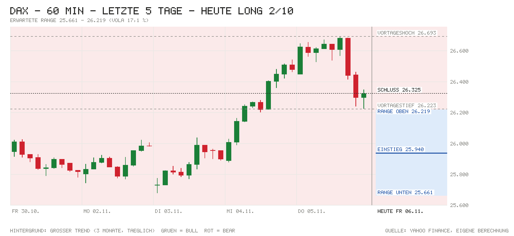

Tagesentscheidung ab 09:04 bis 17:30 Uhr
Knappe Entscheidung für eine Gegenbewegung: Die Indikation von 25.940 (−1,46 %) holt den schlechtesten Nasdaq-100-Tag seit März 2020 (−6,36 %) bereits weitgehend nach, die Nasdaq-Futures erholen sich (+0,86 %), Renditen fallen (Bund 10J 3,22 %) und die deutsche Industrieproduktion überrascht mit +0,7 % (Prognose 0,0 %). ING sieht eine Neubewertung von Tech, kein Rezessionssignal. Wichtigstes Gegenargument: Asien bricht mit ein (Nikkei −5,96 %), Infineon und Munich Re belasten, und um 14:30 kann der US-Arbeitsmarktbericht bei 62 % eingepreister Fed-Erhöhung jede Erholung kippen.
- Kurs um 09:04
- 25.940
- Erwartete Range
- 25.661 – 26.219
- Eingepreist (Tagesoption)
- ±1,08 %
Einschätzung vom Kurs um 09:04 (Median der Indikationen L&S, J.P. Morgan, UBS) bis zum Xetra-Schluss. Range = ±1 σ für die restliche Handelszeit aus der DAX-Tagesoption (ca. 68 %). Keine Anlageberatung.
Chart

Signale
| Signal | Wirkung | Stand und Einordnung |
|---|---|---|
| Vorgaben USA | Gegenwind | S&P 500 −4,36 %, Nasdaq 100 −6,36 %, Dow −3,44 %; SOX über −12 %. Auslöser: Sorge, dass die Demokraten nach den Midterms den Bau von KI-Rechenzentren bremsen. Futures stabil: S&P ±0,00 %, Nasdaq +0,86 %, Dow −1,03 %. |
| Eröffnung & erste Minuten | Rückenwind | Indikation 25.940 (−1,46 % zum Xetra-Schluss 26.325); Eröffnung und Hoch/Tief noch n/v. Große Lücke nach unten, gestern noch Rekordhoch 26.693 – Erholungspotenzial (eigene Einschätzung). |
| Asien & China | Gegenwind | Nikkei −5,96 % (Rohm −17 %), Kospi stark im Minus, Shanghai −1,10 %, CSI 300 −1,44 %, Hang Seng −1,30 %. |
| Datenüberraschungen | Rückenwind | DE Industrieproduktion Sept. +0,7 % m/m vs. Prognose 0,0 % (J/J +0,4 %); US-Erstanträge gestern 189K vs. 197K. |
| Zinserwartung | Gegenwind | Fed 09.12.: 62 % für +25 Bp. (Vortag 82 %); EZB-Einlagensatz 2,50 %. Zinsangst lässt nach, bleibt aber Belastung. |
| Renditen | Rückenwind | Bund 10J 3,22 % (−3 Bp.), US 10J 4,83 % (−1 Bp.; 1 Woche: −14 Bp.) – Flucht in Anleihen. |
| Kreditstress | Neutral | FRED n/v; Ersatz: HYG −0,31 %, LQD +0,15 % – leichte Ausweitung, kein Stress. |
| Öl & Dollar | Neutral | Brent 99,36 USD (+1,09 %) belastet; EUR/USD 1,1183 (−0,46 %) hilft Exporteuren. |
| Trend | Rückenwind | Auch bei 25.940 klar über 21-T. (25.559), 50-T. (25.571) und 200-T.-Schnitt (24.920). |
| Positionierung | Neutral | COT 27.10.: Hedgefonds im S&P-Future netto −400.604, Asset Manager +923.449 – kein Extrem, Stand vor dem Crash. |
| Unternehmensnachrichten | Gegenwind | Munich Re nach JPMorgan-Abstufung auf Tradegate bis −5 %; Infineon gestern rund −9 % im Chip-Ausverkauf. Daimler Truck mit starkem Nordamerika-Geschäft. |
| Profi-Sicht | Rückenwind | ING: verspätete Reaktion auf das Wahlergebnis, idiosynkratische Tech-Neubewertung statt Rezessionssignal. |
| Termine bis 17:30 | Gegenwind | 14:30 US-Arbeitsmarktbericht (Prognose +65K, zuvor +29K), 16:00 Michigan – starkes Ereignisrisiko. |
Bilanz von gestern
05.11.: Long 5/10 – Richtung falsch (Kurs zur Notiz 26.468, Schluss 26.325, Hoch 26.693, Tief 26.223). Range ±250 um den Kurs zur Notiz getroffen (Bewegung −143); bisher 50 % von 2 Tagen getroffen (Soll ca. 68 %).
Marktlage
| Markt | Stand | Veränderung |
|---|---|---|
| DAX (Schluss 05.11.) | 26.325,01 | −0,43 % |
| DAX (Eröffnung heute) | n/v | n/v |
| DAX (jetzt, Kurs zur Notiz 09:04) | 25.940 | −1,46 % |
| S&P 500 (Schluss 05.11.) | 7.353,73 | −4,36 % |
| Nasdaq 100 (Schluss 05.11.) | 26.629,81 | −6,36 % |
| Dow Jones (Schluss 05.11.) | 51.523,06 | −3,44 % |
| US-Futures (S&P / Nasdaq) | 7.382,75 / 26.981,25 | ±0,00 % / +0,86 % |
| Nikkei 225 | Eröffnung 60.374 → Schluss 57.435 | −5,96 % |
| Shanghai Composite | Eröffnung 3.612 → Schluss 3.649 | −1,10 % |
| CSI 300 | Eröffnung 4.018 → Schluss 4.054 | −1,44 % |
| Hang Seng | Eröffnung 24.405 → aktuell 24.474 | −1,30 % |
| EUR/USD | 1,1183 | −0,46 % |
| Brent (USD/Barrel) | 99,36 | +1,09 % |
| Gold (USD/Unze) | 4.060,20 | −1,30 % |
| VIX | 28,18 | +69,66 % |
China: Festland nach tiefer Eröffnung (Shanghai −2,1 %) erholt, aber im Minus geschlossen; ein eigener Auslöser ist nicht gemeldet (eigene Einschätzung: Ansteckung durch den globalen KI-Ausverkauf). DAX-Eröffnung lag zum Datenabruf (Yahoo, bis 15 min verzögert) noch nicht vor. Kein Feiertag.
Anleihen & Zinsen
| Markt | Stand | Veränderung |
|---|---|---|
| Bund 2J | 2,93 % | −8 Bp. (vs. Bundesbank 05.11.: 3,01 %) |
| Bund 10J | 3,22 % | −3 Bp. |
| US-Treasury 2J | 4,46 % | ±0 Bp. (live vs. offiziell 05.11.) |
| US-Treasury 10J | 4,83 % (live) / 4,84 % (offiziell 05.11.) | −1 Bp.; 1 Woche: −14 Bp. |
| Fed, Sitzung 09.12. | Erhöhung um 25 Bp. erwartet | 62 % Wahrscheinlichkeit |
| EZB-Einlagensatz | 2,50 % | zuletzt +25 Bp. (16.09.) |
| Euro-Hochzins-Aufschlag | n/v (FRED) | n/v |
| US-Hochzins (Ersatz: HYG) | 77,28 USD | −0,31 % (Tag) |
Termine heute
- 08:00 Deutschland: Industrieproduktion Sept. – Ist +0,7 % vs. Prognose 0,0 % · zuvor 2,0 %
- 08:45 Frankreich: Handelsbilanz – Prognose −5,8 Mrd. · zuvor −6,1 Mrd.
- 10:30 Reden: Fed-Mitglied Williams, EZB-Chefvolkswirt Lane
- 11:00 Eurozone: Einzelhandelsumsatz – Prognose −0,1 % m/m · zuvor 0,1 %
- 14:30 USA: Arbeitsmarktbericht Oktober – Stellen Prognose +65K · zuvor +29K; Arbeitslosenquote Prognose 4,2 % · zuvor 4,2 %; Stundenlöhne Prognose +0,3 % · zuvor +0,1 %
- 16:00 USA: Michigan-Verbraucherstimmung – Prognose 48,1 · zuvor 48,0
- 17:00 BoJ-Gouverneur Ueda spricht (nach Schluss: Fed-Mitglied Bowman 18:15)
Nachrichten zu DAX-Werten
- Infineon / Chipwerte: Gestern rund −9 % auf ca. 46 € im KI-Ausverkauf; der SOX fiel danach um mehr als 12 %. Jahreszahlen am 10.11. Einschätzung: negativ, weiterer Druck wahrscheinlich, Erholung hängt an Nasdaq-Futures.
- Munich Re: JPMorgan stuft ab (auch Hannover Rück), auf Tradegate bis −5 %. Einschätzung: negativ, bremst den defensiven Teil des Index.
- Daimler Truck: JPMorgan lobt Quartalszahlen, vor allem Nordamerika (Zollrückerstattungen, Absatz, Preise); nach Vortagesplus auf Tradegate rund −1 %. Einschätzung: leicht positiv.
- SAP / Siemens: Keine eigenen Nachrichten; als größte Werte dem Tech-Sentiment ausgesetzt. Einschätzung: SAP als Software-Wert weniger betroffen als Chips (eigene Einschätzung).
Profi-Sicht & Positionierung
- ING THINK: Der Tech-Einbruch sei eine verspätete Reaktion auf das Wahlergebnis und eine Neubewertung von Tech, kein Rezessionssignal; EUR/USD dürfte um 1,12 bleiben, solide Payrolls könnten kurze US-Renditen und den Dollar heben (FX Daily). Treasuries profitieren von Fluchtbewegungen, 10J bei verschärfter Risikoscheu Richtung 4,65 % (Rates Spark). Deutsche Industrie robust, aber das Plus sei vorübergehend (Snap).
- Positionierung (COT, Stand 27.10.): Hedgefonds im S&P-Future netto −400.604 (−29.359), Asset Manager +923.449 (+22.072); 10J-Treasury: Hedgefonds-Short ausgeweitet (−120.051). Daten vor dem Crash, kein Extrem.
Quellen
- Marktdaten per Skript: Amber Terminal / Yahoo Finance (Kurse, Futures, HYG/LQD), onvista (Indikationen, VDAX), Eurex (DAX-Tagesoption ODAP), Nasdaq (Kalender), CNBC / Bundesbank / US-Treasury (Renditen), CFTC (COT), ING THINK; FRED (Kreditaufschläge) nicht erreichbar
- CNBC: Magnificent 7 loses $1 trillion
- CNN: Stock markets plunge as massive tech sell-off wipes $2.5 trillion
- onvista/dpa-AFX: Weitere Gewinnmitnahmen nach Tech-Ausverkauf
- onvista: DAX-Flash – Tech-Einbruch in den USA
- goldesel: Infineon – KI-Verkaufswelle drückt den Kurs
- ING THINK: FX Daily – Tech collapses, FX shrugs
- ING THINK: German industry defies higher energy prices